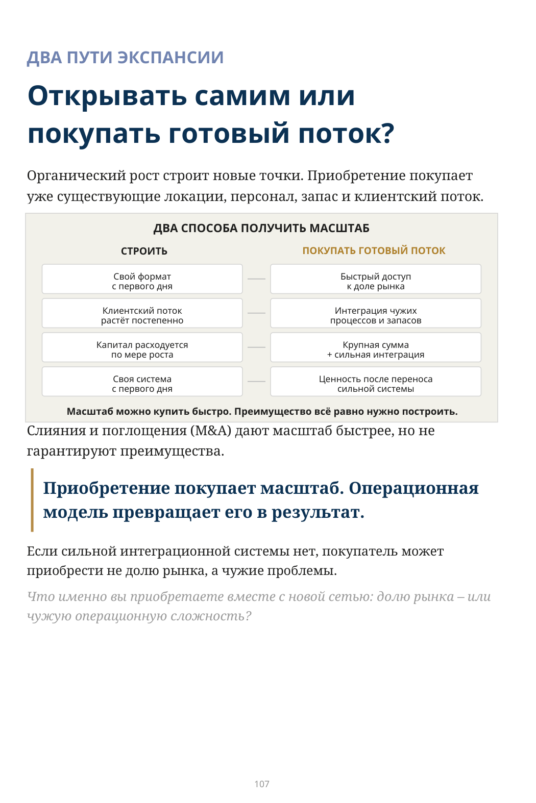
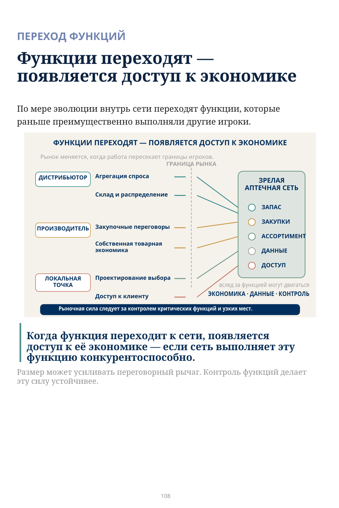
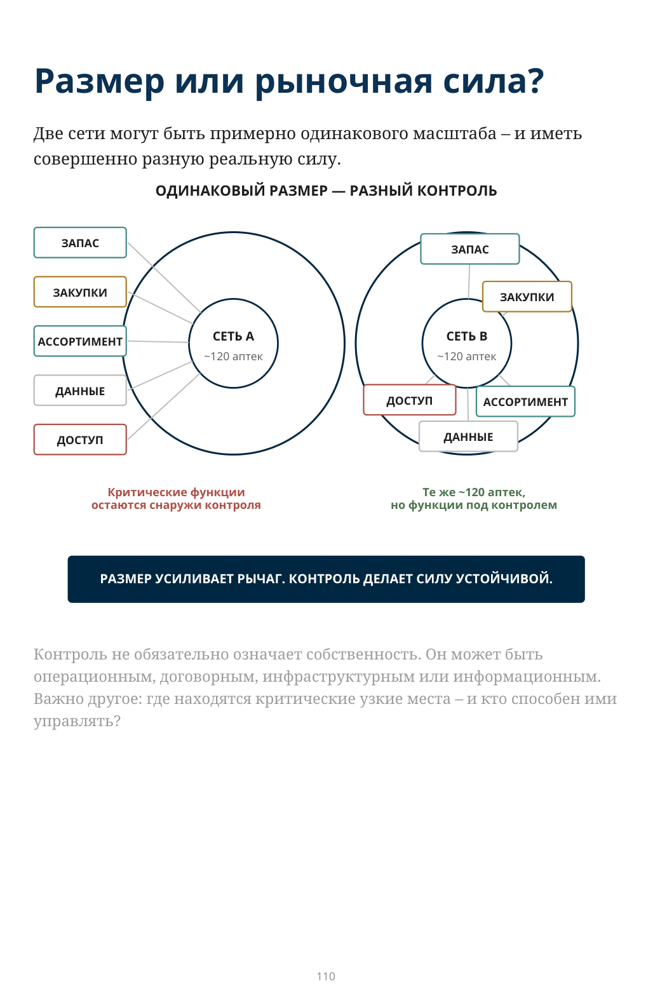

Что происходит, когда одна сеть системно работает лучше других?
ЭТАП 10 · ЭКСПАНСИЯ, КОНСОЛИДАЦИЯ И ПЕРЕХОД ФУНКЦИЙ
Экспансия, консолидация и переход функций
Сначала разница видна внутри компании: выше уровень наличия, быстрее оборачивается капитал, заказ и пополнение работают по единым правилам, ассортимент меняется вместе со спросом.
Но что происходит, если эти преимущества работают одновременно много лет?
Они начинают усиливать друг друга.
Тогда сеть получает не просто лучший результат на одной аптеке. Она получает возможность расти быстрее — если новая точка не разрушает качество уже построенной модели.
РАЗМЕР — НЕ РЫНОЧНАЯ СИЛА
Размер сам по себе не гарантирует устойчивой рыночной силы. Он может создавать переговорный рычаг, но контроль критических функций делает позицию сильнее и труднее заменимой.
Если две сети одинаково велики, но одна контролирует склад, закупки, ассортимент и доступ к клиенту, а другая зависит от внешних игроков — одинаково ли они сильны?
ТОЧКА УСКОРЕНИЯ
Сначала построить машину. Потом нажать на газ
До появления системы рост часто увеличивает потребность в деньгах и управленческом внимании. После появления системы рост может создавать ресурс для следующего роста.
- высокий уровень наличия удерживает клиента;
- оборачиваемость высвобождает капитал;
- автоматизация снижает зависимость от отдельных людей;
- центральный склад может частично объединять локальную неопределённость;
- прямые закупки и СТМ могут удерживать внутри сети большую часть маржи;
- перераспределение возвращает капитал из избыточного или
неэффективно размещённого запаса;
- управление категориями и сетевой ассортимент закрывают больше потребностей клиента.
Масштаб до эффективности умножает проблемы. Масштаб после эффективности может умножать преимущество.
Ключевое слово — может. Если качество модели падает, рост снова становится источником сложности.
КАК ПРЕИМУЩЕСТВО ФИНАНСИРУЕТ СЛЕДУЮЩИЙ ШАГ
Эффективная модель → денежный ресурс → следующий шаг роста
Что именно сеть покупает, когда растёт быстрее: больше точек — или больше контроля?
ДВА ПУТИ ЭКСПАНСИИ
Открывать самим или покупать готовый поток?
Органический рост строит новые точки. Приобретение покупает уже существующие локации, персонал, запас и клиентский поток.
Слияния и поглощения (M&A) дают масштаб быстрее, но не гарантируют преимущества.
Приобретение покупает масштаб. Операционная модель превращает его в результат.
Если сильной интеграционной системы нет, покупатель может приобрести не долю рынка, а чужие проблемы.
Что именно вы приобретаете вместе с новой сетью: долю рынка — или чужую операционную сложность?

Описание схемы
FIG_052: ДВА ПУТИ ЭКСПАНСИИ
Инфографика «ДВА ПУТИ ЭКСПАНСИИ». Сопровождающий текст раздела поясняет её смысл: Приобретение покупает масштаб. Операционная модель превращает его в результат. Если сильной интеграционной системы нет, покупатель может приобрести не долю рынка, а чужие проблемы. Что именно вы приобретаете вместе с новой сетью: долю рынка — или чужую операционную сложность?
ПЕРЕХОД ФУНКЦИЙ
По мере эволюции внутрь сети переходят функции, которые раньше преимущественно выполняли другие игроки.
Когда функция переходит к сети, появляется доступ к её экономике — если сеть выполняет эту функцию конкурентоспособно.
Размер может усиливать переговорный рычаг. Контроль функций делает эту силу устойчивее.

Описание схемы
FIG_053: ПЕРЕХОД ФУНКЦИЙ
Схема показывает переход критических функций от отдельных участников к зрелой аптечной сети: дистрибьютор, производитель и локальная точка передают или теряют контроль над операциями спроса, складом/распределением, закупками, запасом, ассортиментом, данными и доступом.
Когда клиент начинает выполнять вашу работу
ЧТО ОСТАЁТСЯ ДИСТРИБЬЮТОРУ?
Крупная сеть может всё меньше зависеть от классической дистрибьюторской модели: собственный склад, внутренняя логистика, прямые договоры и централизованное управление запасом меняют роль посредника.
- может сокращаться крупный объём и плотность маршрутов;
- может уменьшаться часть торговой маржи;
- может исчезать роль обязательного посредника.
Но это не универсальный закон. Дистрибьютор может идти в розницу, объединять независимые аптеки, становиться инфраструктурным оператором или продавать логистику, данные и специализированные услуги.
Риск дистрибьютора — потерять не только объём, а прежнюю роль.
СКОЛЬКО ПОКУПАТЕЛЕЙ ОПРЕДЕЛЯЮТ ДОСТУП ПРОИЗВОДИТЕЛЯ К РЫНКУ?
После консолидации значительная часть клиентского потока может оказаться у ограниченного числа крупных сетей. Они влияют на ассортимент, наличие, видимость в продвижении, конкуренцию с СТМ и данные о фактических продажах.
На стороне производства конкурентов может быть много. Но доступ к пациенту часто контролируют всего несколько крупных покупателей.
Так масштаб превращается в контроль доступа — но только там, где сеть действительно контролирует значимую часть клиентского потока.
Размер или рыночная сила?
Две сети могут быть примерно одинакового масштаба — и иметь совершенно разную реальную силу.
Контроль не обязательно означает собственность. Он может быть операционным, договорным, инфраструктурным или информационным. Важно другое: где находятся критические узкие места — и кто способен ими управлять?

Описание схемы
FIG_054: Размер или рыночная сила?
Две сети одинакового размера могут иметь разную силу. В одной критические функции — запас, закупки, ассортимент, данные и доступ — находятся внутри контроля; в другой часть функций контролируется внешними сторонами. Размер усиливает рынок, но условия диктует контроль.
КОНСОЛИДАЦИЯ — ДАВЛЕНИЕ, А НЕ СУДЬБА
Обязательно ли рынок придёт к нескольким крупным сетям?
Нет. Экономика может создавать давление к консолидации, но конечную структуру рынка меняют правила собственности, география, возмещение стоимости лекарств, ограничения концентрации, роль независимых аптек, культура потребления и государственная политика.
Высокая концентрация там, где масштабирование разрешено и эффективно.
Консолидация идёт по регионам и оставляет несколько сильных центров.
Собственность остаётся раздробленной, а сила концентрируется в закупках, логистике или ассоциациях.
Ни один сценарий не является обязательным. На одном рынке независимые аптеки уступают место сетям; на другом закон ограничивает концентрацию и усиливает дистрибьюторов, закупочные объединения или ассоциации.
Если более эффективная сеть может масштабироваться и сохранять качество модели, её преимущество начинает менять структуру рынка.
Структура рынка зависит не только от эффективности игроков, но и от правил, по которым им разрешено расти.
Карта эволюции аптечной сети
Эволюция показывает, какую следующую способность нужно построить. Рыночная сила объясняет, почему это имеет значение.
| СПОСОБНОСТЬ | ЭКОНОМИЧЕСКИЙ ЭФФЕКТ | ЧТО ОТКРЫВАЕТ ДАЛЬШЕ | КАК МЕНЯЕТСЯ СИЛА |
|---|---|---|---|
| Уровень наличия | Удерживает спрос и клиента | Стабильный поток | Клиентское преимущество |
| Оборачиваемость | Высвобождает капитал | Экспансию | Финансовая гибкость |
| Автоматизация заказа | Масштабирует правила | Большую сеть | Управленческий контроль |
| Центральный склад | Сокращает время пополнения; может частично объединять локальный риск | Прямые закупки | Контроль цепочки поставок |
| Прямые закупки | Могут удерживать больше закупочной маржи внутри сети | СТМ; более глубокую торговую функцию | Меньше зависимости от посредника |
| Перераспределение | Возвращает капитал из излишков | Более широкий ассортимент | Контроль сетевого запаса |
| Управление категориями | Проектирует клиентский выбор | Сильную ассортиментную архитектуру | Контроль полки |
| Сетевой ассортимент | Расширяет доступ без дублирования запаса | Больше закрытых потребностей | Контроль доступа к ассортименту |
| Локация / формат / франшиза | Даёт новые потоки и форматы | Расширение присутствия | Контроль доступа к потоку |
| Масштабируемая модель | Повторяет систему без потери качества | Точки, форматы, альянсы | Переговорная сила |
Ни одна строка не является обязательной для каждого рынка. Это карта способностей и последствий, а не лестница зрелости.
Проверка розничной части
Какой способности сегодня больше всего не хватает для следующего этапа развития компании?
| СПОСОБНОСТЬ | НУЖНА СЕЙЧАС? | ТЕКУЩЕЕ СОСТОЯНИЕ | ГЛАВНОЕ ОГРАНИЧЕНИЕ | СЛЕДУЮЩЕЕ РЕШЕНИЕ |
|---|---|---|---|---|
| Уровень наличия и пропущенные продажи | Да Нет | |||
| Оборачиваемость и капитал | Да Нет | |||
| Автоматизированный заказ | Да Нет | |||
| Центральный склад и пополнение | Да Нет | |||
| Прямые закупки и экономика | Да Нет | |||
| Перераспределение и вывод запаса | Да Нет | |||
| Управление категориями | Да Нет | |||
| Цифровой заказ и сетевой ассортимент | Да Нет | |||
| Локация, франшиза и формат | Да Нет | |||
| Масштабирование без потери качества | Да Нет |
Какую критическую функцию мы всё ещё отдаём другому игроку — и что это означает для нашей экономики и силы?
Эволюция аптечной сети
Аптечная сеть начиналась как точка продажи. Затем она научилась управлять наличием, капиталом, заказом, складом, закупками, излишками, ассортиментом, цифровым доступом и масштабом.
В результате она начала выполнять всё большую часть работы, которая раньше давала другим игрокам объём, маржу и влияние.